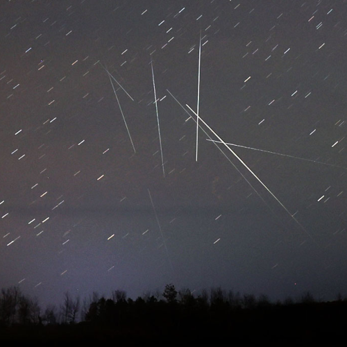

Lluvia de estrellas gemínidas

Tránsito de satélites
La investigación se articula a partir de un conjunto de tensiones que permiten comprender cómo se transforma nuestra relación con el cielo en el marco de infraestructuras tecnológicas cada vez más invasivas. La primera tensión emerge entre la experiencia contemporánea del cielo y las formas preoccidentales de relacionarse con los fenómenos celestes, en las que el firmamento constituía un eje cosmológico y ritual. Más que contraponer dos sistemas de conocimiento, el proyecto aborda la distancia histórica y sensorial entre estos modos de observación, atendiendo a cómo la tecnificación extrema no ha eliminado la dimensión simbólica del cosmos, sino que la ha desplazado y reconfigurado.
Una segunda tensión se sitúa entre la funcionalidad instrumental de las tecnologías espaciales y las narrativas que producen más allá de su propósito técnico. Fenómenos como los desplomes orbitables de satélites, la persistencia del ruido del fondo cósmico de microondas o agotamiento de la batería del Voyager I evidencian que lo tecnológico no opera únicamente en el plano instrumental, sino que genera significados residuales que rozan lo mítico o lo sagrado (Davis, 2021; Bataille, 1991). Desde esta perspectiva, el proyecto parte de la hipótesis de que la infraestructura espacial contemporánea funciona como un nuevo dispositivo cosmológico, capaz de producir ritualidades seculares, metanarrativas y modos alternativos de imaginar lo que entendemos por “cosmos”.
Finalmente, la investigación aborda la tensión entre la territorialidad de la mirada y la abstracción del dato flotante. La astronomía contemporánea produce información que circula desprendida de su punto de origen, transformando el cielo en un conjunto de registros móviles más que en una experiencia situada. Frente a ello, el proyecto retoma la importancia del territorio a través de dos enclaves de observación: el Observatorio Anstronómico ALMA en Atacama y el Observatorio Prehispánico Altavista en Zacatecas. Ambos sitios atravesados por los trópicos de Capricornio y Cáncer, respectivamente.